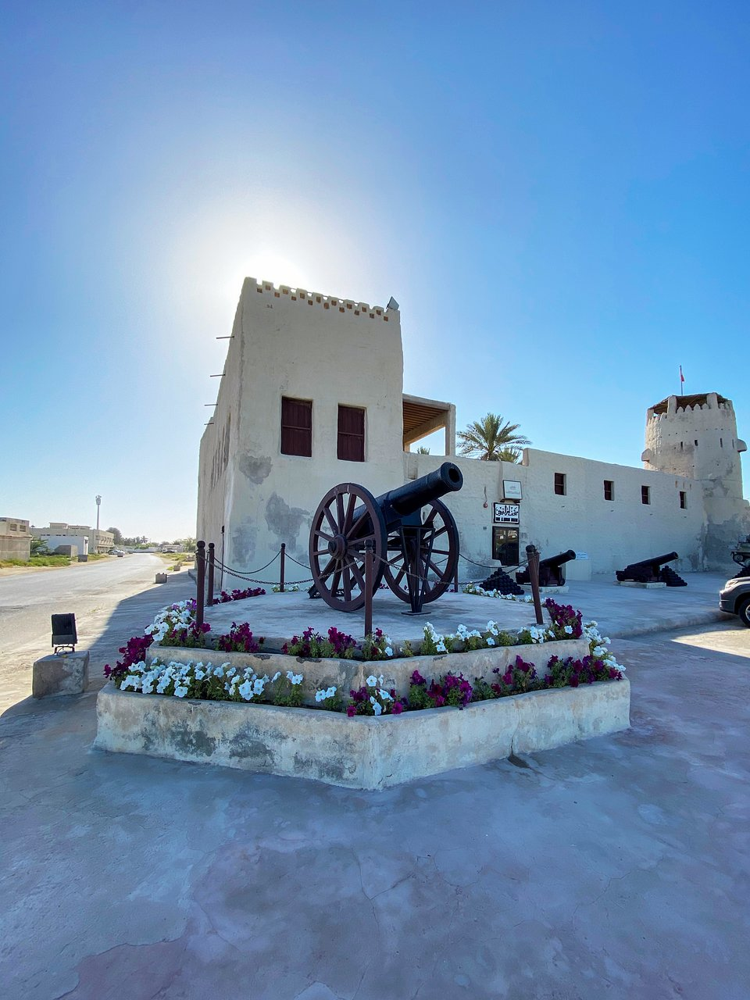

Umm Al Quwain Fort, also known as the Al Ali Fort, is located in the city of Umm Al Quwain in the United Arab Emirates. It was the seat of the rulers of Umm Al Quwain and the centre of government in the emirate until 1969.
The Al Ali Fort was built in 1768 by the founder of the modern Al Mualla dynasty, Sheikh Rashid Bin Majid Al Mualla. Sheikh Hamad was murdered in the fort 9 February 1929, by a slave called Saeed from the household of Hamad's blind uncle.
Hamad was succeeded by Ahmad bin Rashid Al Mualla following a colourful incident whereby the population of the town rose up against Abdelrahman and Saeed.
